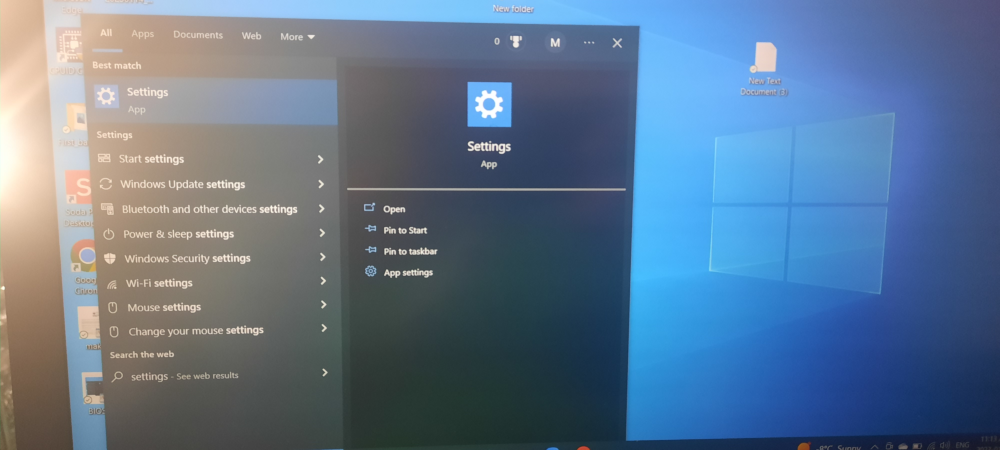
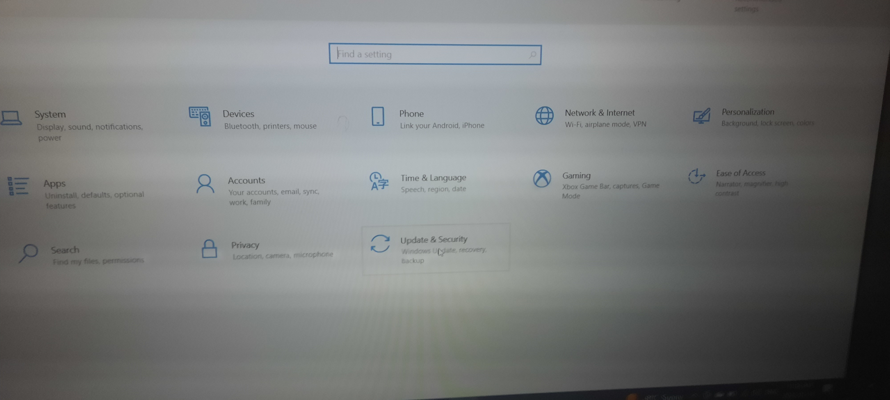
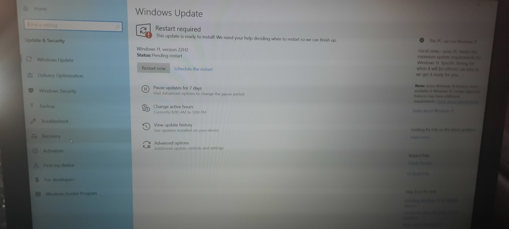
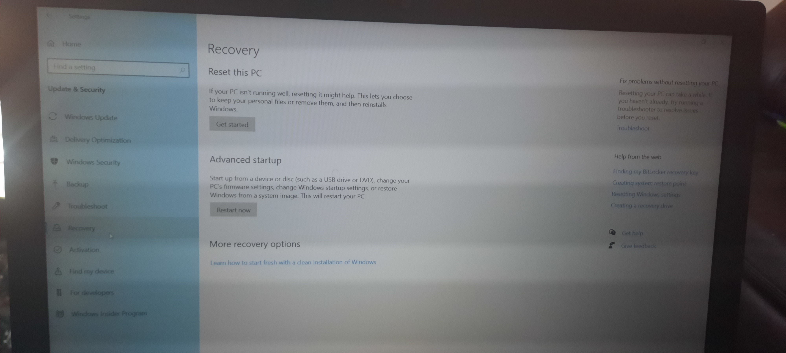
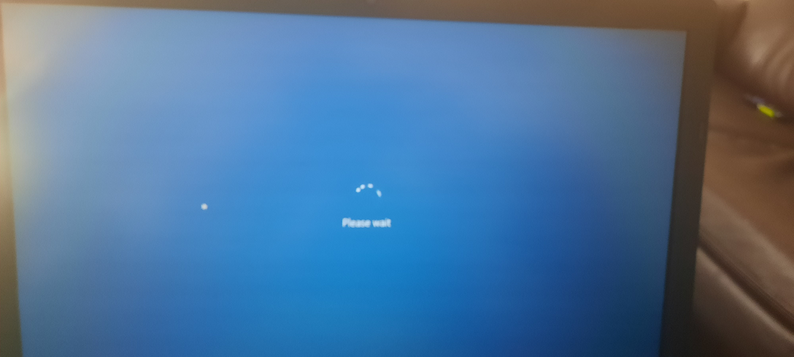
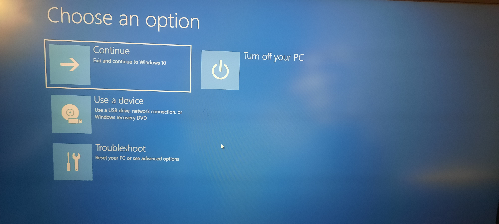
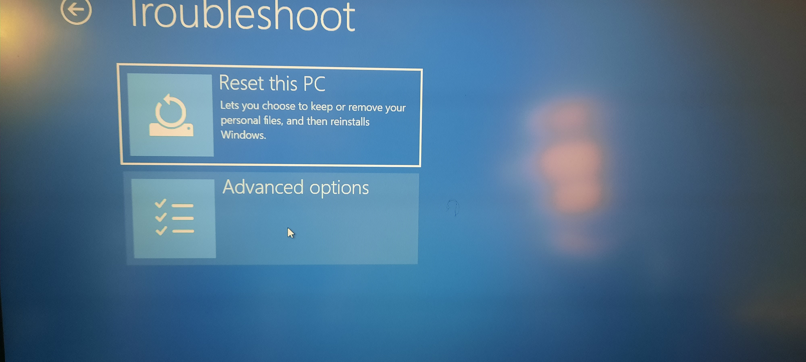
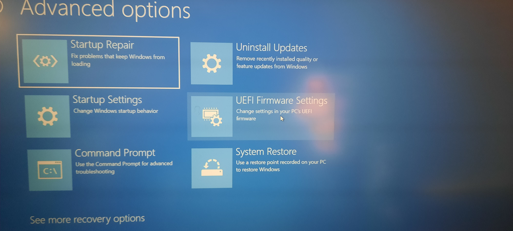

By following the steps on the picture it brings to the BIOS setting page.

From windows settings go to the Update & Security section.

By pressing the Recovery button.

It leads to the Advanced startup afterward clinck on to Restart now it will load for a few seconde.

Loading starting

Choose option appears

By clicking on the Troubeshoot it opens another page select the Advanced options.

Select where shows the UEFI Firmware Settings.

Next click on the button Restart.

Finnally it shows there the System BIOS.
Click on the close or Esc button to exit.